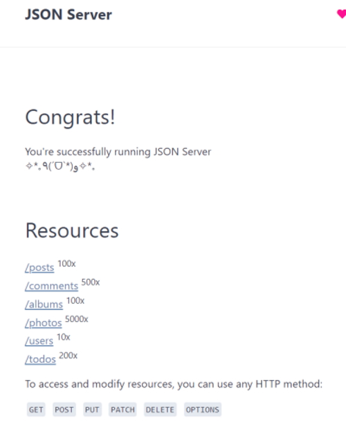

As developers we usually need a REST API for testing purposes. There is a website that allows you to use their web API for testing but you can also download a server version to install on your own development environment.
JSON Placeholder Fake REST API website.
You can download a copy of the server here.
The server uses LowDB as a JSON data store.
We are going to build our own server.
Create a folder jsonserver.
npm init
Now install the server.
npm install --save json-server
In package.json add the following.
"scripts": {
"dev": "json-server --watch db.json",
"remote": "json-server https://jsonplaceholder.typicode.com/db"
},
On either the dev or the remote instance to can see all of the resources in your database with.

This allows us to use our own data or use the remote data.
Create a new file in the root folder named db.json.
{
"users": [
{
"id": "1",
"firstName": "Alan",
"lastName": "Robson",
"email": "alan@alan.com",
"age": 68,
"companyId": "1"
},
...
],
"companies": [
{
"id": "1",
"name": "Microsoft",
"description": "Microsoft Corporation is an American multinational technology company with headquarters in Redmond, Washington. It develops, manufactures, licenses, supports, and sells computer software, consumer electronics, personal computers, and related services."
},
...
]
}
You can use the following routes locally or remote.
// GET ALL USERS
http://localhost:3000/users
// GET SINGLE USER
http://localhost:3000/users/1
// GET ALL COMPANIES
http://localhost:3000/companies
// GET SINGLE COMPANY
http://localhost:3000/companies/1
// GET ALL USERS OF A COMPANY
http://localhost:3000/companies/1/users
// FILTER COMPANIES BY NAME
http://localhost:3000/companies?name=Microsoft
http://localhost:3000/companies?name=Microsoft&name=Google
// PAGINATION & LIMIT
http://localhost:3000/companies?_page=1&_limit=2
// SORTING
http://localhost:3000/companies?_sort=name&_order=asc
// USERS AGE RANGE
http://localhost:3000/users?age_gte=30
http://localhost:3000/users?age_gte=30&age_lte=40
// FULL TEXT SEARCH
http://localhost:3000/users?q=Alan
On the dev site you can also create CRUD requests and use Postman to handle these requests.